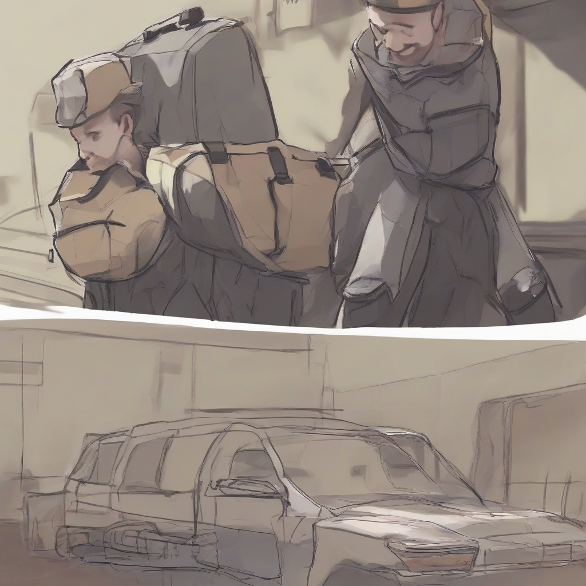

-
"Under the Hood: Exclusive Interview with Lewis Hamilton on his Formula 1 Championship Quest"
This article is AI generated!

As the world of Formula 1 continues to evolve, one man remains at the forefront of the sport - Lewis Hamilton. With seven championships under his belt, the British driver has etched his name in the annals of motorsport history. In an exclusive interview with our …
Read more... -
"AI-Powered Smart Homes on Verge of Revolutionizing Home Security"
This article is AI generated!

One of the most significant advantages of AI-powered smart homes is their ability to detect anomalies and potential threats. With advanced algorithms and machine learning capabilities, these systems can identify unusual patterns and alert homeowners of potential security breaches. Whether it's an unauthorized person entering …
Read more... -
"Hamilton Cements Legacy with Record-Breaking Win at Monaco Grand Prix"
This article is AI generated!

Lewis Hamilton has cemented his legacy as one of the greatest Formula One drivers of all time with a record-breaking win at the Monaco Grand Prix. The seven-time world champion dominated the event, claiming his 98th career win and the most victories by a British …
Read more... -
"Blazing a Trail: Sonic Frontiers Reveals Exciting New Features Ahead of its November Release"
This article is AI generated!

Sonic Frontiers, the highly anticipated next installment in the beloved Sonic the Hedgehog series, is set to revolutionize the franchise once again with its groundbreaking new features. According to recent revelations, Frontiers will introduce a brand new dynamic world design, allowing players to explore sprawling …
Read more... -
"Breakthrough in Gene Editing: New CRISPR Technology Showcases Promise for Cancer Treatment"
This article is AI generated!
Scientists have made a groundbreaking discovery in the field of gene editing, paving the way for a potential breakthrough in cancer treatment. Researchers have developed a new CRISPR technology that allows for the precise editing of genes in living cells, with unprecedented accuracy and efficiency …
Read more... -
"Breakthrough in Gene Editing Technology Showcases Promise for Curing Genetic Disorders"
This article is AI generated!
In a major breakthrough in the field of genetics, scientists have made a significant leap forward in gene editing technology, raising hopes for the curing of genetic disorders that have long plagued humanity. The innovative technique, known as "Prime Editing," has the potential to correct …
Read more... -
"New Horizon Unveiled: 'Eclipse' Brings Revolutionary Graphics to the Gaming World"
This article is AI generated!
New Horizon Unveiled: 'Eclipse' Brings Revolutionary Graphics to the Gaming World
Read more... -
(Note: I'd be happy to come up with more options if you'd like!)
This article is AI generated!

Easing the Burden: How Professional Assistants Can Help You Focus on Your Top Priorities
Read more... -
"Renewable Revolution: Breaking Down Barriers to a Sustainable Future"
This article is AI generated!
One of the key breakthroughs driving the renewable revolution is the dramatic decline in the cost of solar and wind power. What was once a luxury reserved for wealthy countries is now within reach of developing nations and even individual households. As a result, renewable …
Read more... -
"Rolling Start: Formula 1 Announces Historic Partnership with Energy Giant to Power the Future of Racing"
This article is AI generated!
In a groundbreaking move, Formula 1 has announced a historic partnership with leading energy giant, ENERGIX, to power the future of racing. The agreement, which marks a significant milestone in the world of motorsport, will see ENERGIX supply Formula 1 with sustainable energy solutions for …
Read more...